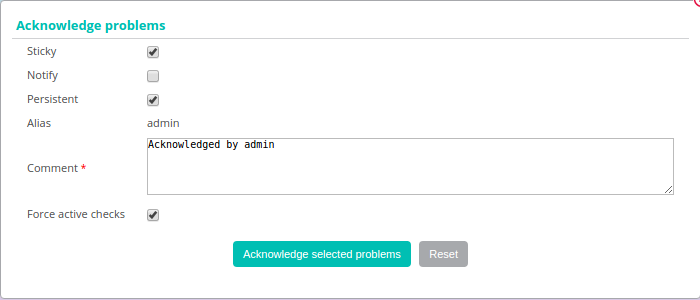

Monitoring management¶
Acknowledging a problem¶
Principle¶
When a host or a service presents an incident and this incident is confirmed, the notification process is triggered; it can generate a notification sent to a contact. If the problem persists and depending on the configuration produced (resend a notification at regular time intervals, escalation of notification, etc.) it is possible that other alerts be send.
The acknowledgement of an incident can be used to stop the notification process (sending of notifications) until the host or the service recovers its nominal status.
Example of use:
A service is charged with checking the health of the hard disks in a disc array. A hard disk goes down on a disk array; a notification is sent. The supervision operator acknowledges the service specifying that a team is in the process of dealing with the problem. Notifications are no longer sent. The service will return to its nominal state after a change of disk.
Note
The acknowledgement of an incident signifies the taking into account of the problem by a user of the supervision (and not the correction of the incident which can only be effective when the check returns to its nominal state).
Practice¶
To acknowledge an incident, there are two solutions:
From real time monitoring¶
- Go into the menu: Monitoring ==> Status Details ==> Hosts (or services)
- Select the object(s) that you want acknowledge
- In the menu: More actions click on Hosts: Acknowledge or on Services: Acknowledge
The following window appears:
- If the Sticky box is checked, the acknowledgement will be maintained in case of a change of Not-OK status (E.g.: DOWN to REACHABLE or WARNING to CRITICAL). Otherwise, the acknowledgement disappears and the notification process is reactivated.
- If the Notify box is checked, a notification is sent to the contacts linked to the object to warn that the incident on the resource has been acknowledged (in the situation the contact possesses the activity acknowledgement notification filter).
- If the Persistent box is checked, the acknowledgement will be maintained in the case of a restart of the scheduler. Otherwise, the acknowledgement disappears and the notification process is reactivated.
- The Comment field is generally used to provide the reason of the acknowledgement; it is mandatory
- If the Acknowledge services attached to hosts box is checked, all the services linked to the host will be acknowledged (option visible only if we acknowledge a host).
- If the Force active checks box is checked, a command will be sent to the scheduler to recheck the resource as soon as possible.
To delete the acknowledgement of an incident on an object:
- Go into the menu: Monitoring ==> Status Details ==> Hosts (or services)
- Select the objects you want to delete the acknowledgement
- In the menu: More actions, click on Hosts: Disacknowledge or on Services: Disacknowledge
From the detailed sheet of an object¶
From of the detail page of an object, click on the icon  associated with the Acknowledged field in the Options frame
associated with the Acknowledged field in the Options frame
You will access the dedicated page enabling you to acknowledge the incident.
Note
The fields are identical to the window obtained from the real time monitoring menu.
Add comment¶
Principle¶
Centreon allows us to add comments on an object. This Comment is visible by anyone having access to the resource (host or service). A comment has the following properties:
- Hostname
- Servicename if the comment is associated with a service
- Date of entry of the comment
- Author of the comment
- The contents of the comment
- The validity of the comment against a restart of the scheduler
Practice¶
There are two solutions to add a comment:
From the detailed sheet of an object¶
- Access to the details page of the object
- In the category Host/Service Commands, click on Add a comment for this host/this service
Attributes¶
The following window appears:

- The Host Name field defines the host concerned by the comment.
- If you have chosen to add a comment to a Service, the Service field can be used to select the service concerned by the comment.
- If the Persistent box is checked, the comment will be maintained in the event of a restart of the scheduler.
- The Comments field contains the comment itself.
Programming a downtime period¶
Principle¶
A downtime period is a time period during which the notifications to a resource are disabled. Downtimes period are used during a programmed maintenance operation; they save us receiving false-positive alerts.
Note
It is important to select the all the resources necessary to prevent false-positives and false-negatives. In addition, the time spent in this state is taken into account during the generation of the availability data.
There are two types of downtime:
- The fixed downtime: it starts and stops at the preview time.
- The flexible downime: it starts during the preview time window as soon as an incident is detected and finishes when preview time in seconds expires.
Practice¶
There are three different possibilities to define a downtime:
- From the detail sheets of a host or of the service
- From the real time monitoring interface
- From the Downtime menu
From the detailed sheet of an object¶
- Access the detail page of an object
- In the category: Commands, click on Schedule downtime for this host/service
From real time monitoring¶
- Go into the menu: Monitoring ==> Status Details ==> Hosts (or services)
- Select the(s) object(s) on which you want to program a downtime period
- In the menu: More actions..., click on Hosts : Set Downtime or Services : Set Downtime
Attributes¶
- The Host Name field defines the host concerned by the downtime
- The Service field defines the service concerned by the downtime
- If the Fixed box is checked the downtime is fixed. Otherwise, it is flexible
- If the downtime is flexible, the Duration field defines the length of the downtime
- The Start Time and End Time fields define the beginning and end date of the downtime
- The Comments field can be used to indicate why the downtime is defined
Management of checks¶
Principle¶
It is possible to temporarily enable or disable check on a host or a service.
Warning
Changes to settings checks do not affect the configuration of the object in the database. These changes are made on the supervision in real time; they are cancelled if the scheduler is restarted.
Practice¶
From the detailed sheet of an object¶
- Access the details page of the object
- In the category: Options go to the line: Active checks to check the state of the checks.
To:
- Enable the check, click on
- Disable the check, click on

From real time monitoring¶
- Go into the menu: Monitoring ==> Status Details ==> Hosts (or services)
- Select the object(s) on which you want to enable or disable the check
- In the menu: More actions... click on:
- Hosts : Disable Check or Services: Disable Check to stop the check on a host or a service
- Hosts: Enable Check or Services: Enable Check to enable the check of a host or of a service
Submitting a result¶
Principle¶
For passively checked services, it is possible send a result manually to the scheduler so that it is taken into account.
Practice¶
To submit a result, access the details page of the object. In the category Service Commands click on Submit result for this service
Attributes¶
- The Host Name and Service fields define the host and the service the result will be submitted
- The Check result field defines the status of the service
- The Check output field defines the message to be displayed for the service
- The Performance data field can be used to define performance data for the generation of graphs
Management of notifications¶
Principle¶
It is possible to temporarily enable or disable the notification of a host or a service.
Warning
Changes the notifications settings do not affect the configuration of the object in the database. These changes are made on the real time monitoring; they are cancelled if the scheduler is restarted.
Practice¶
There are two ways of managing the notifications:
From the detailed sheet of an object¶
- Access the details page of the object
- In the category: Options go to the line: Service Notifications
To:
- Enable the notification, click on
- Disable the notification, click on
From real time monitoring¶
- Go into the menu: Monitoring ==> Status Details ==> Hosts (or services)
- Select the host(s) / service(s) you want enable or disable the notification
- In the menu: More actions... click on:
- Hosts: Disable Notification or Services: Disable Notification to stop the notification of a host or of a service
- Hosts: Enable Notification or Services: Enable Notification to enable the notification of a host or a service
Reprogramming checks¶
Principe¶
By default, the checks (checks on a service) are executed at regular intervals following the configuration defined by the user. It is possible to interact on the check scheduling pile to change the programming of the checks.
There are two types of programming:
- Normal programming: the service check is given priority in the scheduler queue (asap).
- Forced programming: the service check is given priority in the scheduler queue (asap) even if the time of the execution request is outside the check period or if the service is not of the active type.
Practice¶
There are two ways of forcing the check of a service:
From the detailed sheet of the object¶
- Access the detail page of the object
- In the category Host Commands (or Service Commands), click on Re-schedule the next check for this host / service or Re-schedule the next check for this host / service (forced)
From real time monitoring¶
- Go into the menu: Monitoring ==> Status Details ==> Hosts (or services)
- Select the objects to for which you want to force the check
- In the menu: More actions... click on Schedule immediate check or Schedule immediate check (Forced)